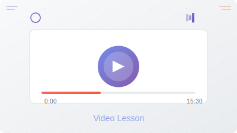

Fluid Dynamics
Master fluid flow fundamentals, explore the scope and applications in computer simulations, and get introduced to computational fluid dynamics (CFD) with comprehensive video lessons

Introduction Fluid Dynamics
Overview of fluid flow fundamentals,Scope of fluid dynamics and its use in computer simulations.
Watch LessonFluid Dynamics – Class 2: What Are Fluids?
Dive into the second session of our Fluid Dynamics series where we explore what fluids are, their key properties, and the various ways to study
Watch LessonFluid Dynamics – Scheduled Class
Join us for an upcoming session on Tuesday, 7th August 2025. The topic will be part of our ongoing fluid dynamics series — stay tuned for exact details!
View Details